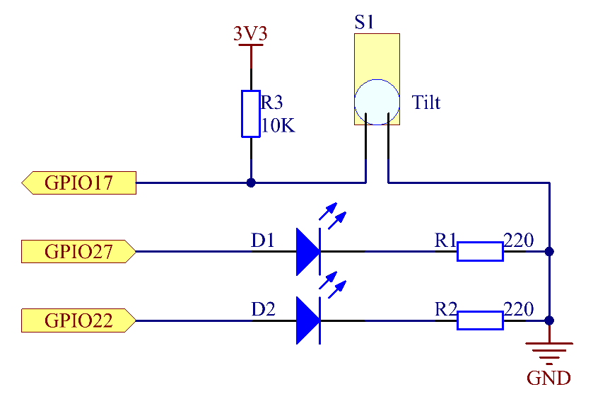
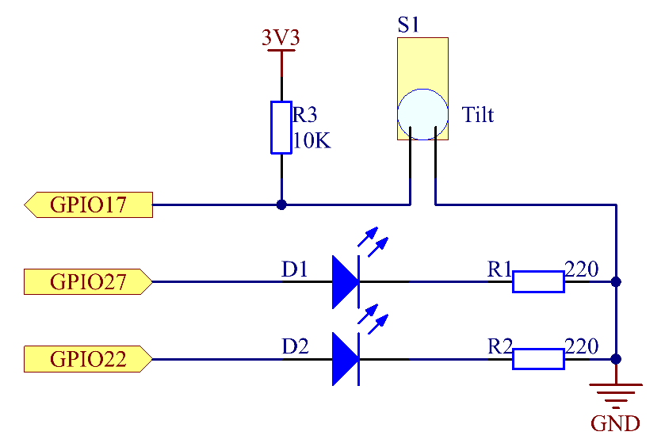

Note
Bonjour, bienvenue dans la communauté des passionnés de SunFounder Raspberry Pi & Arduino & ESP32 sur Facebook ! Plongez dans l’univers de Raspberry Pi, Arduino et ESP32 avec d’autres passionnés.
Pourquoi nous rejoindre ?
Support d’experts : Résolvez les problèmes après-vente et techniques avec l’aide de notre communauté et de notre équipe.
Apprenez et partagez : Échangez des conseils et des tutoriels pour améliorer vos compétences.
Aperçus exclusifs : Obtenez un accès anticipé aux nouvelles annonces de produits et avant-premières.
Réductions exclusives : Profitez de réductions exclusives sur nos derniers produits.
Promotions festives et cadeaux : Participez à des concours et promotions pendant les fêtes.
üëâ Pr√™t √† explorer et cr√©er avec nous ? Cliquez sur [Ici] et rejoignez-nous d√®s aujourd‚Äôhui !
2.1.3 Interrupteur à bascule
Introduction
Il s’agit d’un interrupteur à bascule avec une bille métallique à l’intérieur. Il est utilisé pour détecter des inclinaisons de petits angles.
Composants

Principe
Interrupteur à bascule
Le principe est très simple. Lorsque l’interrupteur est incliné à un certain angle, la bille à l’intérieur roule et touche les deux contacts reliés aux broches extérieures, déclenchant ainsi les circuits. Sinon, la bille reste éloignée des contacts, interrompant ainsi les circuits.
Schéma électrique
 

Procédure expérimentale
Étape 1 : Construisez le circuit.
{kind=link}
Pour les utilisateurs du langage C
Étape 2 : Changez de répertoire.
cd ~/davinci-kit-for-raspberry-pi/c/2.1.3/
Étape 3 : Compilez.
gcc 2.1.3_Tilt.c -lwiringPi
Étape 4 : Exécutez.
sudo ./a.out
Placez l’interrupteur horizontalement et la LED verte s’allumera. Si vous l’inclinez, « Tilt! » sera imprimé à l’écran et la LED rouge s’allumera. Replacez-le horizontalement et la LED verte se rallumera.
Note
Si cela ne fonctionne pas après l’exécution ou s’il y a un message d’erreur : "wiringPi.h: Aucun fichier ou répertoire de ce type », veuillez consulter C code is not working?.
Code
#include <wiringPi.h>
#include <stdio.h>
#define TiltPin 0
#define Gpin 2
#define Rpin 3
void LED(char* color)
{
pinMode(Gpin, OUTPUT);
pinMode(Rpin, OUTPUT);
if (color == "RED")
{
digitalWrite(Rpin, HIGH);
digitalWrite(Gpin, LOW);
}
else if (color == "GREEN")
{
digitalWrite(Rpin, LOW);
digitalWrite(Gpin, HIGH);
}
else
printf("LED Error");
}
int main(void)
{
if(wiringPiSetup() == -1){ //quand l'initialisation de wiring échoue, afficher un message à l'écran
printf("setup wiringPi failed !");
return 1;
}
pinMode(TiltPin, INPUT);
LED("GREEN");
while(1){
if(0 == digitalRead(TiltPin)){
delay(10);
if(0 == digitalRead(TiltPin)){
LED("RED");
printf("Tilt!\n");
delay(100);
}
}
else if(1 == digitalRead(TiltPin)){
delay(10);
if(1 == digitalRead(TiltPin)){
LED("GREEN");
}
}
}
return 0;
}
Explication du code
void LED(char* color)
{
pinMode(Gpin, OUTPUT);
pinMode(Rpin, OUTPUT);
if (color == "RED")
{
digitalWrite(Rpin, HIGH);
digitalWrite(Gpin, LOW);
}
else if (color == "GREEN")
{
digitalWrite(Rpin, LOW);
digitalWrite(Gpin, HIGH);
}
else
printf("LED Error");
}
Définissez une fonction LED() pour allumer ou éteindre les deux LED. Si le paramètre color est « RED », la LED rouge s’allume; de même, si le paramètre color est « GREEN », la LED verte s’allume.
while(1){
if(0 == digitalRead(TiltPin)){
delay(10);
if(0 == digitalRead(TiltPin)){
LED("RED");
printf("Tilt!\n");
}
}
else if(1 == digitalRead(TiltPin)){
delay(10);
if(1 == digitalRead(TiltPin)){
LED("GREEN");
}
}
}
Si la valeur lue de l’interrupteur d’inclinaison est 0, cela signifie que l’interrupteur est incliné, puis vous transmettez le paramètre « RED » à la fonction LED pour allumer la LED rouge; sinon, la LED verte s’allume.
Pour les utilisateurs de Python
Étape 2 : Changez de répertoire.
cd ~/davinci-kit-for-raspberry-pi/python/
Étape 3 : Exécutez.
sudo python3 2.1.3_Tilt.py
Placez l’inclinaison horizontalement, et la LED verte s’allume. Si vous l’inclinez, « Incliné! » sera imprimé à l’écran et la LED rouge s’allumera. Replacez-le horizontalement, et la LED verte se rallumera.
Code
Note
Vous pouvez Modifier/Réinitialiser/Copier/Exécuter/Arrêter le code ci-dessous. Mais avant cela, vous devez accéder au chemin du code source comme davinci-kit-for-raspberry-pi/python.
import RPi.GPIO as GPIO
import time
dhtPin = 17
GPIO.setmode(GPIO.BCM)
MAX_UNCHANGE_COUNT = 100
STATE_INIT_PULL_DOWN = 1
STATE_INIT_PULL_UP = 2
STATE_DATA_FIRST_PULL_DOWN = 3
STATE_DATA_PULL_UP = 4
STATE_DATA_PULL_DOWN = 5
def readDht11():
GPIO.setup(dhtPin, GPIO.OUT)
GPIO.output(dhtPin, GPIO.HIGH)
time.sleep(0.05)
GPIO.output(dhtPin, GPIO.LOW)
time.sleep(0.02)
GPIO.setup(dhtPin, GPIO.IN, GPIO.PUD_UP)
unchanged_count = 0
last = -1
data = []
while True:
current = GPIO.input(dhtPin)
data.append(current)
if last != current:
unchanged_count = 0
last = current
else:
unchanged_count += 1
if unchanged_count > MAX_UNCHANGE_COUNT:
break
state = STATE_INIT_PULL_DOWN
lengths = []
current_length = 0
for current in data:
current_length += 1
if state == STATE_INIT_PULL_DOWN:
if current == GPIO.LOW:
state = STATE_INIT_PULL_UP
else:
continue
if state == STATE_INIT_PULL_UP:
if current == GPIO.HIGH:
state = STATE_DATA_FIRST_PULL_DOWN
else:
continue
if state == STATE_DATA_FIRST_PULL_DOWN:
if current == GPIO.LOW:
state = STATE_DATA_PULL_UP
else:
continue
if state == STATE_DATA_PULL_UP:
if current == GPIO.HIGH:
current_length = 0
state = STATE_DATA_PULL_DOWN
else:
continue
if state == STATE_DATA_PULL_DOWN:
if current == GPIO.LOW:
lengths.append(current_length)
state = STATE_DATA_PULL_UP
else:
continue
if len(lengths) != 40:
#print ("Données incorrectes, saut")
return False
shortest_pull_up = min(lengths)
longest_pull_up = max(lengths)
halfway = (longest_pull_up + shortest_pull_up) / 2
bits = []
the_bytes = []
byte = 0
for length in lengths:
bit = 0
if length > halfway:
bit = 1
bits.append(bit)
#print ("bits: %s, length: %d" % (bits, len(bits)))
for i in range(0, len(bits)):
byte = byte << 1
if (bits[i]):
byte = byte | 1
else:
byte = byte | 0
if ((i + 1) % 8 == 0):
the_bytes.append(byte)
byte = 0
#print (the_bytes)
checksum = (the_bytes[0] + the_bytes[1] + the_bytes[2] + the_bytes[3]) & 0xFF
if the_bytes[4] != checksum:
#print ("Données incorrectes, saut")
return False
return the_bytes[0], the_bytes[2]
def main():
while True:
result = readDht11()
if result:
humidity, temperature = result
print ("humidity: %s %%, Temperature: %s C`" % (humidity, temperature))
time.sleep(1)
def destroy():
GPIO.cleanup()
if __name__ == '__main__':
try:
main()
except KeyboardInterrupt:
destroy()
Explication du Code
GPIO.add_event_detect(TiltPin, GPIO.BOTH, callback=detect, bouncetime=200)
Configure une détection sur le TiltPin avec une fonction de rappel, detect.
def Led(x):
if x == 0:
GPIO.output(Rpin, 1)
GPIO.output(Gpin, 0)
if x == 1:
GPIO.output(Rpin, 0)
GPIO.output(Gpin, 1)
Définissez une fonction Led() pour allumer ou éteindre les deux LED. Si x=0, la LED rouge s’allume ; sinon, la LED verte s’allume.
def Print(x):
if x == 0:
print (' *************')
print (' * Tilt! *')
print (' *************')
Créez une fonction, Print(), pour afficher le message ci-dessus à l’écran.
def detect(chn):
Led(GPIO.input(TiltPin))
Print(GPIO.input(TiltPin))
Définissez une fonction de rappel pour la détection d’inclinaison. Récupérez la valeur lue de l’interrupteur d’inclinaison, puis la fonction Led() contrôle l’allumage ou l’extinction des deux LED en fonction de cette valeur.
Image du phénomène